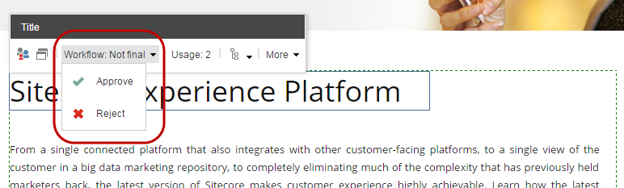
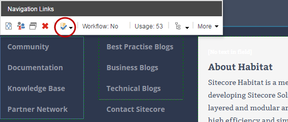

関連コンテンツの管理¶
関連付けられたコンテンツとは、別のアイテムに由来するページのコンテンツのことです。関連コンテンツを編集すると、同じアイテムから派生した他のページのコンテンツも変更されます。
自分が関連コンテンツを編集しているかどうか、それによってサイト内の別の場所でもコンテンツを変更しているかどうかを確実に把握するために、ページ上のすべての関連コンテンツの概要を取得することができます。
エクスペリエンス エディターでは、以下の方法で関連コンテンツの概要を取得できます。
ページで使用されているすべての関連コンテンツの一覧を表示するには、[プレゼンテーション] タブの [コンテンツ] セクションで [関連コンテンツ] をクリックします。ドロップダウン リストの項目をクリックして、コンテンツ エディタで対応するコンテンツ項目を編集します。
ページ上のどのコンポーネントとサブレイアウトに関連するコンテンツが含まれているかを確認するには、[表示] タブの [関連するコンテンツ] チェック ボックスをオンにします。これにより、ページ上の関連するコンテンツを含むすべてのコンポーネントとサブレイアウトが緑の点線で強調表示されます。
重要
ページを公開する場合、ワークフローの最終状態ではないコンテンツ アイテムに由来する関連コンテンツは公開されません。関連付けられたコンテンツ] チェックボックスを選択してページを公開しようとすると、ページで使用されている 1 つ以上のアイテムが公開できない場合に通知が表示されます。
関連するコンテンツの表示と管理¶
1 つのコンポーネントまたはサブレイアウトの関連するコンテンツを表示して管理するには、次の手順に従います。
関連するコンテンツを含むコンポーネントまたはサブレイアウトをクリックします。
{kind=link}
表示されるフローティング ツールバーには、コンテンツに関する以下の情報が表示されます。

ワークフロー - 関連するコンテンツが属するアイテムがワークフローの一部であるかどうか、またアイテムがまだ最終的な ワークフロー状態にないかどうかを示します。十分な権利を持っている場合は、[ワークフロー] をクリックして、次のワークフロー状態にアイテムを移動することができます。
{kind=link}
注釈
ワークフローでアイテムを移動する際には、そのアイテムのコンテンツがサイトで使用されている他のすべてのページにも影響することを覚えておいてください。
[使用状況] - 関連するコンテンツを使用するアイテムの数を示します。関連するコンテンツの一般的な情報と、このコンテンツを使用するアイテムのリストを表示するには、[使用状況] をクリックします。
{kind=link}
関連するコンテンツの追加または変更¶
コンポーネントまたはサブレイアウトの関連するコンテンツを追加または変更するには、次の手順に従います。
エクスペリエンス エディタで、関連するコンテンツを追加または変更するコンポーネントまたはサブレイアウトをクリックします。
フローティング ツールバーで

関連するコンテンツを変更するには、 をクリックしてから、[関連するコンテンツを変更]をクリックします。
{kind=link}
コンポーネントまたはサブレイアウトに新しい関連コンテンツを追加するには、 をクリックして、関連コンテンツを追加します。
{kind=link}
関連付けられたコンテンツの選択 ダイアログ ボックスで、コンポーネントまたはサブレイアウトのソースとして使用するアイテムに移動するか、検索して OK をクリックします。
{kind=link}